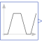
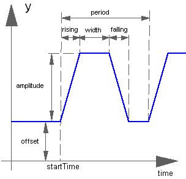

TrapezoidGenerate trapezoidal signal of type Real |

|
Information
This information is part of the Modelica Standard Library maintained by the Modelica Association.
The Real output y is a trapezoid signal:

Parameters (8)
| offset |
Value: 0 Type: Real Description: Offset of output signal y |
|---|---|
| startTime |
Value: 0 Type: Time (s) Description: Output y = offset for time < startTime |
| amplitude |
Value: 1 Type: Real Description: Amplitude of trapezoid |
| rising |
Value: 0 Type: Time (s) Description: Rising duration of trapezoid |
| width |
Value: 0.5 Type: Time (s) Description: Width duration of trapezoid |
| falling |
Value: 0 Type: Time (s) Description: Falling duration of trapezoid |
| period |
Value: Type: Time (s) Description: Time for one period |
| nperiod |
Value: -1 Type: Integer Description: Number of periods (< 0 means infinite number of periods) |
Connectors (1)
| y |
Type: RealOutput Description: Connector of Real output signal |
|---|
Used in Examples (1)
|
Modelica.Thermal.FluidHeatFlow.Examples
Water pumping station |
Used in Components (1)
|
Modelica.Electrical.PowerConverters.DCAC.Control
Intersective PWM |